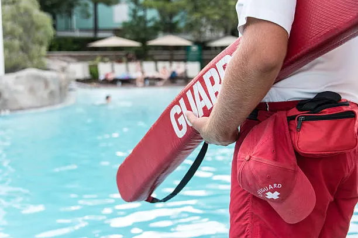

Por qué elegirnos
Profesionalidad en cada turno

Socorristas titulados
Todo nuestro personal cuenta con titulación oficial, formación en primeros auxilios y RCP certificada.

Cobertura flexible
Temporada completa, fines de semana o eventos puntuales. Nos adaptamos a los horarios de tu instalación.

Cobertura en Gran Canaria
Operamos en toda la isla: Las Palmas, Maspalomas, Playa del Inglés, Puerto de Mogán y más.